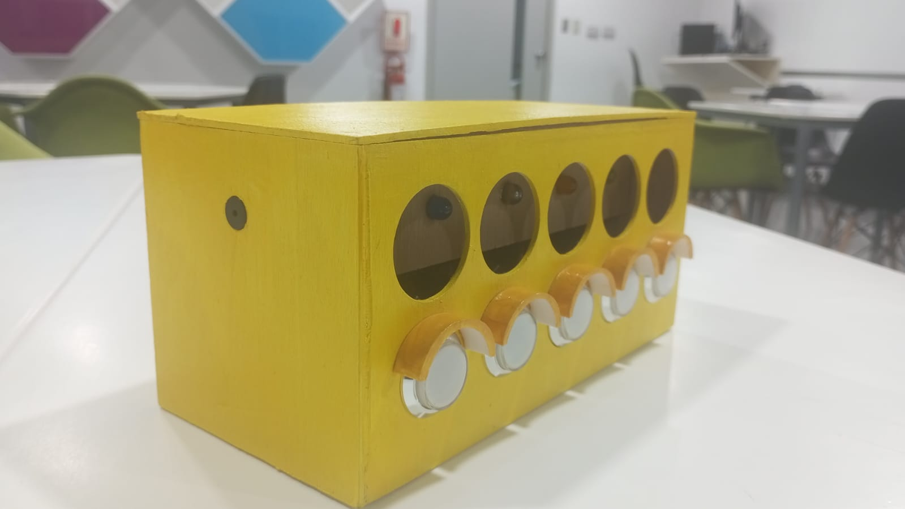

Semana 15
Clase presencial
En la clase presencial, el profesor Oscar no pudo venir, así que en su lugar vino un profesor de apoyo. Este profesor iba de grupo en grupo y nos ayudaba según lo que necesitáramos. En nuestro grupo, su visita fue breve ya que teníamos casi todo listo. Se centró únicamente en revisar las conexiones del producto. Mientras tanto, en otros grupos, brindó apoyo para identificar dispositivos de Internet de las cosas que podrían ser útiles en el futuro. Nosotros, como equipo, nos enfocamos en avanzar en nuestras tareas, mejorar el diseño del proyecto final y coordinar grabaciones, presentaciones y ajustes en general. No tuvimos clase virtual ese día porque era feriado.